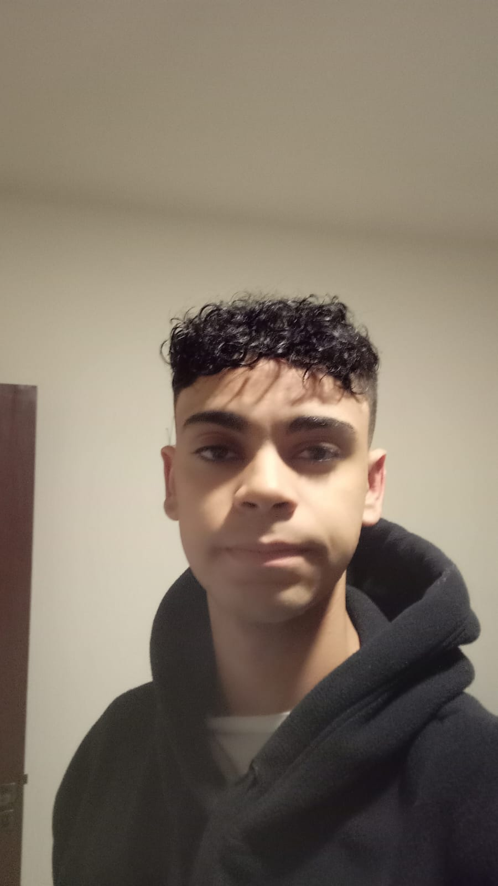

Conheça Nossa Equipe

CEO

Analista de Dados/Designer

Diretor de pesquisa

Developer/Designer

Fundada em 2024, a PontoLimpo nasceu da paixão por promover mudanças positivas no mundo. Criada por uma equipe diversa e comprometida, nossa missão é facilitar o acesso às informações sobre pontos de coleta de materiais descartáveis em todo o Brasil. Desde o início, acreditamos que cada ação, por menor que pareça, pode contribuir significativamente para um planeta mais sustentável.
Gabriel, nosso CEO, lidera uma equipe que inclui Raphael, especialista em análise de dados e design; Nicolas, responsável pelas pesquisas que direcionam nossas estratégias; João Henrique, nosso developer e designer; e João Gabriel, que atua como assistente de marketing. Juntos, compartilhamos a visão de que a tecnologia e a educação são ferramentas essenciais para transformar o modo como lidamos com o descarte e a preservação ambiental.
A PontoLimpo existe para ser a ponte entre cidadãos, empresas e comunidades que buscam um futuro mais limpo e responsável. Nosso objetivo é conectar essas partes de maneira eficiente e educativa, facilitando o descarte correto de resíduos e promovendo uma cultura de reciclagem.
Com nossa plataforma, oferecemos mais do que informações: criamos uma rede de sustentabilidade que une tecnologia, conscientização e ação prática. Trabalhamos para que cada usuário da nossa solução sinta-se parte de um movimento maior, no qual o impacto positivo se reflete em um planeta mais saudável para as futuras gerações.